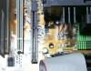
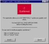

|
|
| 当前位置：电脑报电子版 > 1999 年 > 39 期 > 硬件周刊 > TNT2显卡安装设置DIY |
| 《 TNT2显卡安装设置DIY 》 |
| 日前nVIDIA发布了最新的3D加速芯片GeForce 256，这也就是说，几个月以前才面世的TNT2显卡已经迅速成为了老一代的产品，相信其价格也会飞流直下三千尺，我们就很有希望拥有一块TNT2了。接下来我就来带领大家一步一步地安装和设置好一块TNT2显示卡。
一、显示卡的硬件安装： 首先来看看我们今天要安装的东西：一块Guillemot Maxi Gamer Xentor显示卡，采用RIVA TNT2显示芯片，配备16M显存（如图1）。请注意它的引脚部分（俗称金手指，如图2）共分为三段，这是最新的AGP 4×规格的接口，和目前主流的BX、MVP3芯片组主板上提供的分为两段的AGP 2×插槽有所不同（如图3、图4），不过这并不妨碍我们安装和使用这块支持AGP 4×的TNT2显示卡。接下来我们就要把这块TNT2插进AGP插槽中了，方向不要搞错，有挡板的一侧要朝向机箱外面，装好之后的样子如图5和图6。 
二、驱动程序的安装 当我们买回TNT2显示卡的时候，通常会得到一张附带有驱动程序的光盘。由于目前较大的显示卡生产厂商通常都有很庞大的一个产品系列，而这些产品（可能包含显卡、声卡甚至主板）的驱动程序有时集中放在同样的一张光盘中，如果你对这个品牌的产品系列不熟悉的话，就很难从这张光盘中找到你所需要的驱动程序。因此需要通过显卡附带的说明书或者光盘上的说明文档来确定TNT2的驱动程序在光盘上的路径。确定了显卡驱动程序的位置之后，我们就可以开始安装显卡的驱动程序了。 如果你是在装好操作系统的电脑上升级显卡的话，建议你按照下面的步骤来安装驱动程序： 1.删除旧显卡的驱动程序： 完成TNT2的硬件安装之后开机，在出现“Starting Windows98”时按F8键选择进入安全模式（Safe Mode）。虽然你可以直接以正常（Normal）方式进入Windows并通过更改“显示适配器”来安装驱动程序，但这样做可能会有隐患，尤其是在安装一些兼容性不是很好的显卡的时候。所以建议大家先进入安全模式，然后在桌面上右键点击“我的电脑”图标，选择弹出菜单的中的“属性”，再点“设备管理器”选项卡，双击“显示适配器”打开子栏目，然后你就可以看到曾经在你这台电脑上安装过的所有显示卡的信息了。接下来你要做的事情就是把这些多余的设备删除，然后重新启动电脑。 2.安装新显卡的驱动程序： 重新启动电脑之后，系统会提示发现新硬件“PCI VGA Compatibility Display Adapter ”，而不是你的TNT2。这没有关系，因为你的显卡太新了，去年出的Windows98操作系统不认识它（什么？你用的是Windows95？我昏倒！）。接下来系统会给你两个选择：让Windows搜寻更好的驱动程序（通常是什么也搜索不到）和指定驱动程序的位置。由于我们已经知道驱动程序的位置，所以我们当然选后一项。接下来就是指明驱动程序所在的路径。Windows非常顽固地先去找你的软驱内有没有你所要的东西，不用管它，选择盘符、文件夹，如果没什么差错的话，你就会发现一个被蓝色高亮显示的扩展名为“inf”的文件，再点“确定”，屏幕上就会出现你所需要的驱动程序的名称和一些厂商、版本、发布日期等信息（如图7）。然后点“下一步”，Windows就会自动按照这个inf指定的方式去复制驱动程序文件到你的Windows系统目录下。文件复制完成后，系统会提示重新启动电脑，选择“是”。重新启动电脑之后，显卡的驱动程序就安装完成了。 大家一定注意到以上安装的是nVIDIA发布的公板驱动程序，而Guillemot自己发布的驱动程序却没有露面。这是因为这两种驱动程序的安装方式略有不同，下面就来看看安装驱动程序的另一种方式： 这次我使用的驱动程序是从Guillemot网站下载得到的，文件名为dgp2x－9x－208us.exe，是一个可执行文件。双击文件图标直接执行，会出现如图8的提示。点击“下一步”，将会出现如图9的画面，选择“Install”即可开始安装。接下来就什么也不用你管了，安装程序会自动把一切都处理好。等到重新启动之后，驱动程序就一切正常了。 3.查看显卡的驱动信息： 如何确定你已经正确地安装了TNT2显卡的驱动程序呢？跟我来：首先在桌面空白位置点鼠标右键，在弹出的菜单中选择“属性”， 点击上面的“设置”选项卡，会出现如图10的画面，接下来点右下角的“高级 ”按钮，进入高级设置画面。点击上方的“适配器”选项卡，会出现如图11的或图12画面（分别对应Guillemot和公板的驱动程序）。如果你看不到这些信息，看来是在安装的过程中出了差错，请按照上面的步骤再来一次。 三、TNT2显卡的设置 我们已经完成了这块TNT2显卡的硬件和软件安装。为了能让这块显卡在游戏中充分发挥出它的威力，我们要进一步设置这块显卡的有关选项（为简便起见，仅以公板驱动程序为例加以介绍）。首先进入桌面“属性”→“设置”→“高级” →“RIVA TNT2”，出现的窗口如图13，请注意下方的一个只露出一部分的按钮，我们无法看到按钮上写的是什么（可能是因为驱动程序是英文的而我使用的操作系统是中文），但经过试验，这个按钮是“属性”。让我们看看这个躲在角落的按钮具有什么功能吧。点击这个按钮，哇，柳暗花明又一村，这里隐藏着有关TNT2的大部分优化设置选项。至于具体怎么优化，请参考《电脑报》今年第38期的《RIVA TNT终极优化》一文，虽然该文写的是TNT的优化，但同样适用于TNT2显示卡。不过有两个按钮（如图14）也是躲在角落里面，你一定不要放过它！ 好啦，这块TNT2显示卡的安装和设置就全部介绍完了，你可以痛快地玩 3D游戏了。 |
| 下载本期推荐软件 | 页 首 |
| 《电脑报》版权所有，电脑报网站编辑部设计制作发布 |